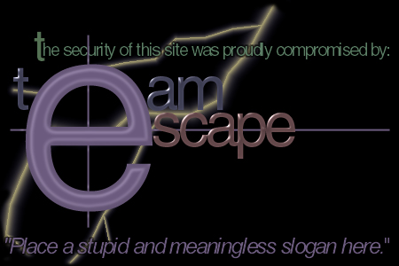

Owned by Cheitan and indigoo

Alright, under normal circumstances I would have a damn lot to bitch about, but right now my girlfriend just left me so I have nothing to say, therefore I'll get right down to the point: Your site was compromised because of extremely poor security, and you should get that fixed. It's not hard to have atleast decent security, and I would recommend you start by changing your passwords. We are doing you a favor by telling you this, so don't come trying to bust our ass: We didnt hurt you, maybe your ego, but not you. We didnt destroy your site either, only defaced the front page, and the original index file can be found as index11.htm, so all you need is to rename it.
Oh and out of the subject, just to bitch atleast a little, never get the illusion that someone loves you just because they tell you they do. It might all be lies. Dont expect someone to really care about your feelings, just because you care about theirs. It might all be false expectations. And most importantly, just remember it's easier to hate than to love, and with hate there's never any pain involved, so maybe hate it the way to go... And if it isn't a route to happiness, well at least it's one to safety.
Peace out!